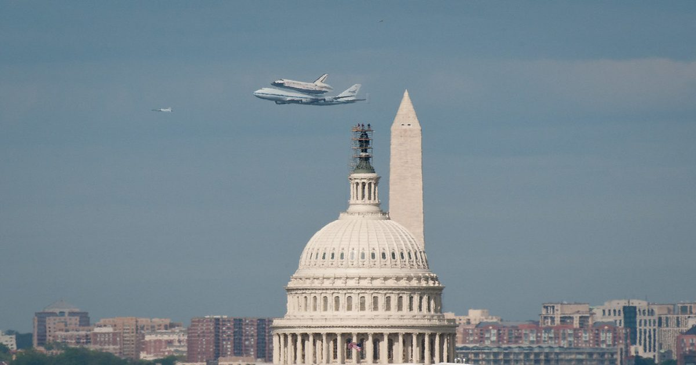

Anthropic на Nasdaq: Амодей подтверждает курс на безопасность ИИ вопреки давлению рынка
На церемонии открытия торгов на бирже Nasdaq генеральный директор Anthropic Дарио Амодей публично зафиксировал приверженность компании принципу ответственного развития искусственного интеллекта. Речь звучала в день исторического первичного размещения акций и стала продолжением дискуссии о темпах внедрения передовых технологий.
Контекст выхода на биржу и личный мотив лидера
Выход Anthropic на торговую площадку Nasdaq стал крупнейшим IPO в истории по объему привлеченных средств, что дало компании мощный финансовый фундамент. Перед звоном колокола Амодей обратился к собравшимся с подготовленным текстом, начав повествование с личной истории: потеря отца от болезни, ставшей излечимой всего через несколько лет, определила его профессиональный путь от биологии к созданию систем ИИ. Этот опыт сформировал убеждение, что интеллект — главный инструмент преодоления сложности природы, и именно его дефицит замедляет медицинский прогресс.
В лаборатории Амодей столкнулся с огромной запутанностью биологических процессов, которые ученые пытаются разобрать десятилетиями. По его словам, современные модели вроде Claude уже помогают исследователям сжимать временные горизонты: от свертывания белков и дизайна лекарств до администрирования клинических испытаний. Генеральный директор выразил уверенность, что достаточно мощный ИИ, работающий в союзе с людьми, способен уместить век научного прогресса в десять лет, не обещая при этом мгновенных прорывов и признавая неизбежность длительных экспериментальных этапов.

Признание рисков и методология их снижения
Амодей не уклонился от перечисления серьезных угроз: злоупотребление технологией отдельными лицами или государствами, экономическое разрушение, потеря контроля над системами ИИ. Однако он подчеркнул, что эти риски не являются неизбежным платежом за прогресс — их можно избежать, если делать правильные выборы на этапе разработки. Разница между сценарием пренебрежения безопасностью и сценарием одержимости ею описывается как колоссальная, и именно второе положение заложено в архитектуру Anthropic с момента основания.
Компания пионерствовала в методах понимания и управления поведением моделей: от защиты от биологических и киберугроз до обучения с выравниванием и «рентгеноскопии» внутренних процессов нейросетей. Амодей признал, что самая сложная работа по безопасности все еще впереди, и талант команды, обеспечивавший создание передовых систем, должен быть перенаправлен на многократную проверку их надежности. Он дал жесткое обязательство: обучение и развертывание моделей будут идти в таком темпе, какой необходим для уверенности в безопасности, без уступок деловому или политическому давлению.

Позиция сестры-сооснователя и семейная миссия
Даниэла Амодей, сооснователь и президент компании, в интервью CNBC поддержала курс брата, назвав перспективы ИИ невероятными, а риски — реальными. Она подчеркнула, что Anthropic была создана именно для митигации этих рисков, и на текущий момент команда выполняет эту задачу на высоком уровне, хотя объем работы впереди остается огромным. Глубокая приверженность безопасности описывается не как корпоративный слоган, а как часть ДНК организации, вытекающая из общей биографии братьев.
Семейный контекст придает публичным заявлениям особый вес: потеря отца стала катализатором миссии ускорить научные открытия через ИИ, сохраняя при этом контроль над технологией. Даниэла отметила, что финансовое укрепление после IPO лишь усиливает решимость действовать правильно, демонстрируя индустрии пример успешного сочетания безопасности и коммерческого успеха. Это позиционируется как альтернатива гонке за сырой мощностью моделей.
Концепция «гонки к вершину» и отраслевой эффект
Амодей сформулировал стратегическую цель не как победу в соревновании за лучшие модели, а как создание условий, при которых вся отрасль движется к более высоким стандартам безопасности. Принцип «гонки к вершину» подразумевает, что когда лидирующие компании конкурируют в качестве защиты, выигрывают все участники и общество в целом. Anthropic намерена вести эту гонку от фронта, но конечная задача — улучшить практики во всей индустрии независимо от того, кто занимает первое место в бенчмарках.
Финансовая сила после размещения рассматривается как инструмент укрепления независимости в принятии решений по безопасности. Амодей завершил речь утверждением, что демонстрация возможности построения удивительно успешной компании без компромиссов в вопросах контроля вдохновит других игроков на аналогичный путь. Текст речи закончился на полутоне, оставив открытым вопрос о том, удастся ли удержать этот курс при росте коммерческого давления и геополитической конкуренции за технологическое лидерство.
Коротко: На IPO Anthropic Дарио Амодей зафиксировал приоритет безопасности над скоростью выпуска моделей, отказавшись подстраиваться под внешнее давление. Компания ставит целью установить отраслевой стандарт ответственного развития ИИ через концепцию «гонки к вершину».
Как вы оцениваете шансы Anthropic удерживать темп безопасности при росте рыночного давления после IPO?